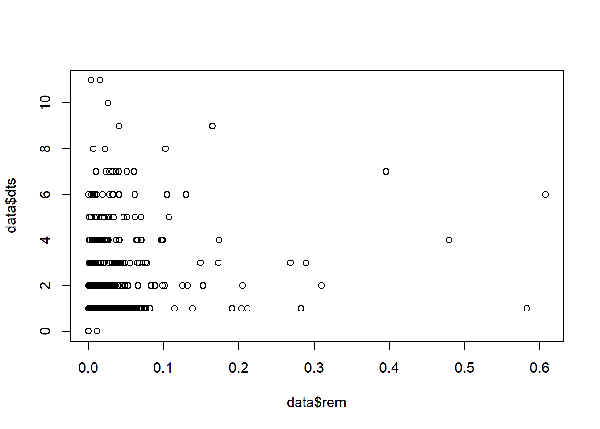

Data exploration
Tad, Priscilla San Juan
Assigned Reading:
Zuur, A. F., E. N. Ieno, and C. S. Elphick. 2010. A protocol for data exploration to avoid common statistical problems. Methods in Ecology and Evolution 1: 3-14. DOI: 10.1111/j.2041-210X.2009.00001.x
Key Points
Data exploration
- Outliers Y & X
- Outliers in response variable vs in covariates - to be dealt with differently
- Transformation less desirable for response variable than in covariates?
Homogeneity Y
- Normality Y
- Example of importance of biological intuition and graphical investigation
- Fig 5b - transformation to get normality not desirable
- Zero troble Y
- Zero-inflated GLM
- Double zeros, or joint absences - what do they mean? e.g., spatial clumping
- Multivariate analysis that ignores double zeros
- Collinearity X
- VIF of 10, 3, or 2 - reason for these values?
- VIFs, or common sense or biological knowledge
- Relationships Y & X
- Multi-panel scatter plots for checking for outliers
- Interactions
- Are data balanced? Use coplot (Fig 11).
- Independence Y
- Mixed effects, etc. to deal with non-independence
- ACF or variograms for checking for temporal and spatial non-independence
Not all steps always needed
Common themes
- Biological intuition = key to make decisions about stats
- Hypothesis testing vs hypothesis generation
- One solution - two data sets - one to create hypotheses and one to test them
- But only practical for large data sets
- Emphasis on graphical tools
Analysis Example
Checking for outliers
Zurr et al. recommends plotting your data using boxplots and dotcharts to detect outliers. Before removing suspected outliers, make sure they are actually outliers!
Since my data is multivariate, I used sequence count per sample for outlier detection in the following examples.
Boxplot
boxplot(sample_sums(merged_data), ylab = "Sequences per sample")
Cleveland dotchart
dotchart(sample_sums(merged_data), xlab = "Sequences per sample",
ylab = "Samples", labels = F)
Plotly - great visualization tool
seq_num <- data.frame(ID=sample_data(merged_data)$ID, Seq=sample_sums(merged_data))
dot_gg <- ggplot(seq_num, aes(x=Seq,y=ID)) + geom_point(col="coral") +
theme(axis.text.y = element_blank(), axis.ticks.y = element_blank())
ggplotly(dot_gg)## We recommend that you use the dev version of ggplot2 with `ggplotly()`
## Install it with: `devtools::install_github('hadley/ggplot2')`Dotchart for multiple variables
Since most of the variables in my dataset are categorical, here I used raw data (sequence count) subsetted by bird species.
Z <- qpcR:::cbind.na(sample_sums(data.BTSA), sample_sums(data.CCRO), sample_sums(data.OBNT),
sample_sums(data.RCWA), sample_sums(data.SWTH), sample_sums(data.YWAR))
colnames(Z) <- c("BTSA", "CCRO", "OBNT", "RCWA", "SWTH", "YWAR")
dotplot(as.matrix(Z), groups = FALSE,
strip = strip.custom(bg = 'white',
par.strip.text = list(cex = 0.8)),
scales = list(x = list(relation = "free"),
y = list(relation = "free"),
draw = FALSE),
col = 1, cex = 0.5, pch = 16,
xlab = "Number of sequences per sample",
ylab = "Order of the data from text file")
Your data’s distribution
Some statistical tests assume normal distributions, making it important to check the shape of your data. Plot a histogram with all of your data and then groups of your data.
“If you want to apply a statistical test to determine whether there is significant group separation in a discriminant analysis, however, normality of observations of a particular variable within each group is important”
Histogram
hist(sample_sums(merged_data), breaks = 100,col = "#a6bddb", xlab="Sequences per sample", main = ' ')
Discussion Questions
Q1: When should you let go of an outlier?
Q2: How can you check for independence using multivariate data?
“Hence, it is important to check whether there is dependence in the raw data before doing the analysis, and also the residuals afterwards. These checks can be made by plotting the response variable vs. time or spatial coordinates.”
Q3: To transform or not to transform? That is the question.
“There are three main reasons for a transformation: to reduce the effect of outliers (especially in covariates), to stabilize the variance and to linearize relationships. However, using more advanced techniques like GLS and GAMs, heterogenity and nonlinearity problems can be solved, making transformation less important.”
Q4: What are some data exploration techniques you have used?